刷牙這件事其實早在摩卡卡6個月大就開始進行的！
但其實我一開始並不知道狗狗也需要刷牙，
還好我也算是用心的好麻麻，比上不足比下有餘啦！ㄎㄎㄎ
為了照顧他都有認真上網找資料爬文，參考人家的經驗！
不過一開始真的是有一餐沒一餐的刷，
有時一週刷1-2次，有時一週都忘記刷惹！XD
結果某天突然發現摩卡卡兩邊上排的最後兩顆牙都長出了滿滿的結石！
應該不到二個月的時間，速度也太快了吧！
從那天開始就不敢再偷懶，幾乎每天睡前都會幫他刷牙！
本來想靠努力刷牙看能不能弄掉或是變淡，
結果都2歲了，牙結石完全沒有變小的跡象！
不過努力刷牙真的是很值得，至少也沒有變得更嚴重，
而且其他顆牙齒都保持的蠻好很乾淨也很白，唯獨那兩顆被滿滿的黃色牙結石包覆著！
所以最近安排了洗牙的療程，然後順便做髖關節檢查
（哈哈哈!通常都是相反厚！XD)
比較了幾間費用以及考慮時間的配合，最後選擇了P麻推薦的芸林動物醫院
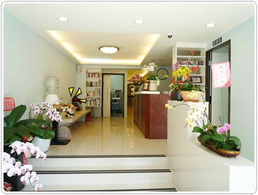
這小子不管帶他去那都當作出來玩，也不怕看醫生！傻呼呼的
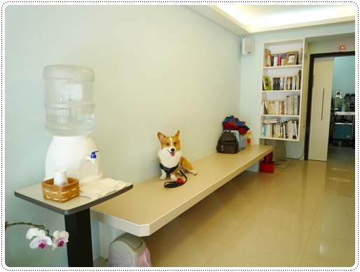
我們預約了下午三點的時間，一進診療室先量個體重先！
不過因為要麻醉，所以他其實已經從前一晚開始空腹到現在超過１２個小時！
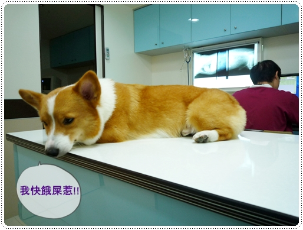
１０.６公斤～我們卡卡變瘦嘍！恢復以往苗條的身材！哈哈哈
但也有可能２００公克是沒吃的關西啦！
放上來只是為了證明頭大不代表會跟體重成正比～他真的沒超過１１公斤！
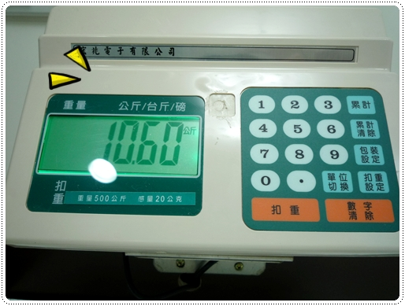
雖然目的是來洗牙跟髖關節檢查，但為了安全起見
醫生建議我們做的項目有 1.基礎血液檢查 2.犬四合一 3.洗牙 4.髖關節檢查
一開始蔡醫師有先幫摩卡卡觸診和聽診，然後發現他的心跳好像過慢！.gif")
因為等等要麻醉，蔡醫生也擔心心臟的部分，所以想偵測摩卡卡的心電圖！
這部分其實是要收費(800/次)，
但醫師因為不放心所以他還是幫卡卡照了但不收我費用，人真好耶！
小小的緊張了一下，好加在照出來是正常的範圍！
另外
1.基礎血液檢查 - 全數過關
2.犬四合一：過關
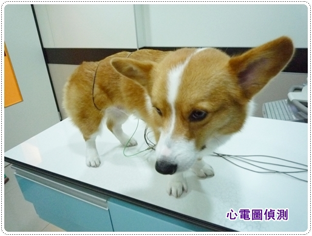
之後先打了鎮靜準備拍髖關節Ｘ光，不過摩卡卡太緊張了，
只打了一點點進去！但他還是立刻攤軟了！
（我有答應醫生要記得幫他們馬賽克XDDDD）
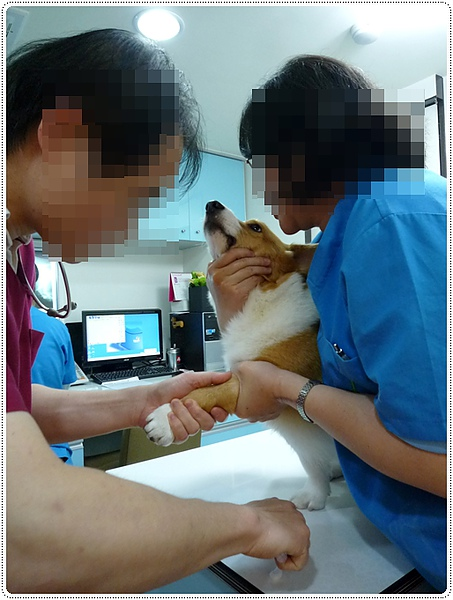
馬上被移到機器上拍Ｘ光片，蔡醫師人真好，什麼都讓我拍！哈哈
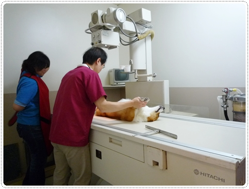
雖然才注入一點點的鎮靜，但摩卡卡還是呈現呆滯的狀態任人擺佈！
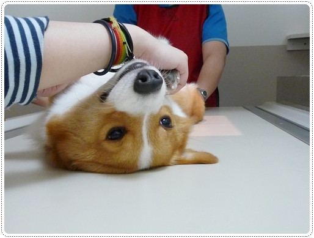
拍完了髖關節的部分，溫柔的ㄚ姨馬上又把摩卡卡抱到手術室準備進行洗牙！
醫師先用固定器將嘴巴撐開，然後再進行插管
插管的時候怎麼覺得摩卡卡有小小氾淚光啊!?
其實插管他應該還蠻不舒服的，有稍稍的嗆到一直咳咳咳！
害老木我又小小緊張，不過醫生也安撫我說這都很安全不用擔心！
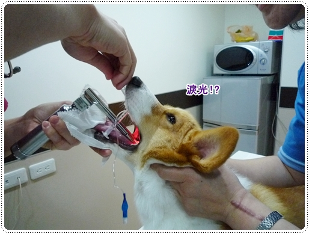
整個洗牙的過程都有儀器在監測狗狗的狀況，
當然也完全公開透明化可以讓我在一旁觀看跟拍照，這點真的很不錯！
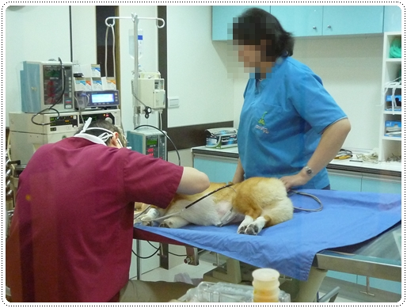
不過我比較好奇的是，為什麼偵測心跳的東西要夾在ＧＧ上啊！
哈哈哈～那應該是測心跳的沒錯吧！？
要是摩卡卡醒著就翻臉啦！他可是不喜歡人家碰他的寶貝耶～～～
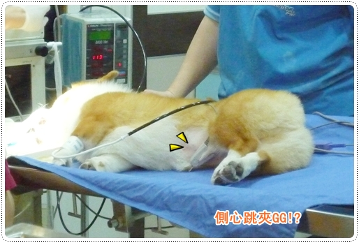
洗牙的時間大概花費了２０分鐘而已，比我想像中快很多！
洗好了溫柔的ㄚ姨會幫狗狗把弄溼的部分先吹乾
(原來診所的女生不一定是護 士!XD)
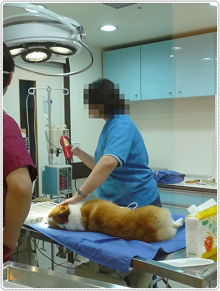
然後我又溜進去偷拍，哈哈哈
掰開一看，真的超乾淨的！好開心啊～終於解決掉那礙眼的結石！
不過我發現我也忘記拍洗牙前的照片，所以無法拿來對照了！= =
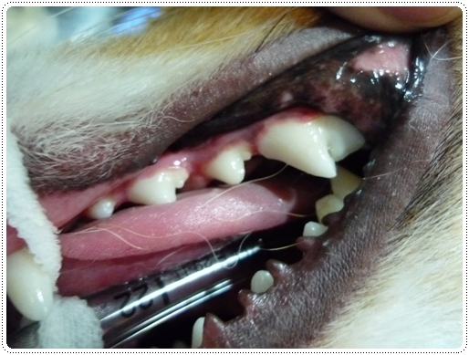
那天去芸林看診真的覺得他們也太有效率了吧！
以上整個過程全部時間大概在１小時全部完成，下一步要做什麼馬上都接的好好的！
不過重頭戲來了，髖關節的部分果然沒有意外，
摩卡卡也是低於標準的105度，
股骨頭跟寬關節的部分也沒有很密和，不算是輕微的症狀
哭哭！雖然如此，但醫師說了卡卡並沒有出現增生的部分，
兩隻腳的受力也很平均，沒有因為任何一隻腳比較嚴重而過度使用！
所以聽完醫師的講解我其實沒有很擔心，反而放心很多！
至少我知道後腳的情況，現在開始就是要好好的保健小胖腿啦！
醫師也順便照了脊椎的部份，還好也是過關，目前看起來都很正常！
看完醫生，摩卡拔對著摩卡卡說：摩卡！你真的是來報恩的！XDDDDD
乖孩子，雖然美中不足但至少還算是個健康寶寶嘛！！
我說退麻醉的過程真的超可愛，阿達阿達的！哈哈哈 給你們看！
去芸林看診還有個好處，結束可以順便去找卡ㄋㄟ玩！
芸
林動物醫院暨醫學檢驗中心 (採預約制)
電話: 02-2872-1398
地址:
台北市北投區石牌路二段332之1號